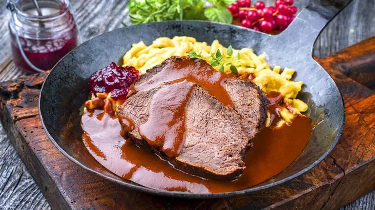

Sauerbraten

Description
Ingredients
- 1kg roast beef
- 500ml red wine
- 100ml white vinegar
- 2 onions
- 4 carrots
- 2 parsley roots
- one half celery root
- 3 bay leaves
- 3 cloves
- 6 dried allspice berries
- salt, pepper
- 3 tablespoons of tomato purée
- 2 tablespoons of honey
- oil
Directions
- Preparation of meat(4 - 6 days ahead): in order to pickle remove surplus fat,
wash and dry. Mix red wine, vinegar and honey inside of big bowl.
- Peel carrots, onions, celery and parsley roots, slice into rough pieces, add to
red wine and vinegar bowl, stir and add roast beef. Seal bowl air-tight, put into fridge
for 4-6 days.
- After time has passed: take meat out of stock, drain. Add salt and pepper. Pour stock
into bowl. Preheat roasting pan with oil, sear roast beef. Preheat oven to 180°C.
- Take meat out of roasting pan. Sieve vegetables out of stock, drain them and roast
inside the roasting pan. Stir in and roast tomato purée, use stock to deglaze.
Add roast beef, close lid. Put into oven for approx. 2 hours; flip beef several times
and refill stock.
- Take meat out of oven and pan. Sieve fluid into pot, cook it up, add gravy
thickener.
- Cut Sauerbraten into slices, serve.
Dumplings are an excellent garnish for Sauerbraten!
Back to overview